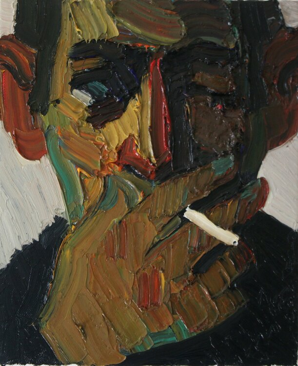

I place a photograph of my uncle on my computer desktop, which means I learn to ignore it. He stands by a tank, helmet tilting to his right, bootlaces tightened as if stitching together a wound. Alive the hand brings up a cigarette we won't see him taste. Last night I smoked one on the steps outside my barn apartment. A promise I broke myself. He promised himself he wouldn't and did. I smell my fingers and I am smelling his. Hands of smoke and gunpowder. Hands that promised they wouldn't, but did.

We utilized this image to portray the parallel between Sharif and her uncle in this excerpt. While she "learns to ignore" the photograph of him on her desktop, the details within the image provide a distinct, conscious connection between them two.
Instead of distracting herself from reality, Sharif is trying to become accustomed to life without her uncle. Cigarettes are a symbol of closeness in their relationship. The act of smoking is her way of remaining connected to her uncle without mourning over him. I think her way of healing is the most healthy because people who distract themselves from the core tend to never resolve their issues.